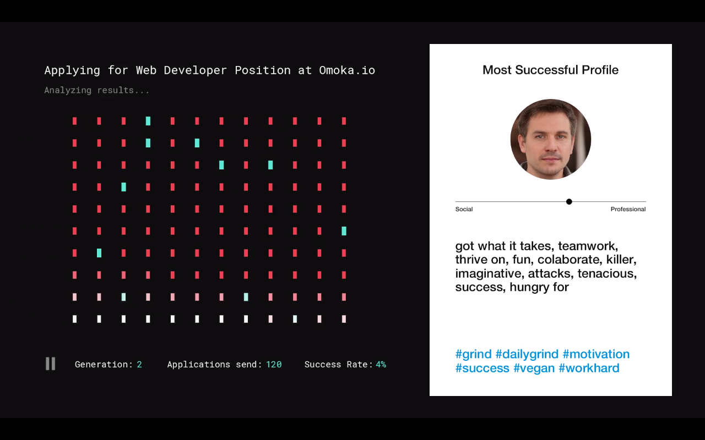

The New Automated Agency (NAU) is a student-led design think-tank that pilots interactive digital experiments to investigate the consequences of automation-assisted employment.
In the face of rising usage and reliance on automation, NAU aims to raise awareness and enable people to reclaim some of the agency that automation takes away from us.
Designing for the critical future of automated recruitment.
Will an algorithm
decide my future?
↓ Scroll down to follow the story
On average, each corporate job opening attracts 250 résumés.
Glassdoor“Software that uses artificial intelligence can screen, grade, and rank every single resume you receive for an open req – instantly.”
Ideal, Software ProviderAn audit of such a resume screening tool concluded that the algorithm found two factors to be most indicative of job performance:
“their name was Jared, and whether they played high school lacrosse”
Quartz, 2018

“Unilever has claimed it is saving hundreds of thousands of pounds a year by replacing human recruiters with an artificial intelligence system, amid warnings of a populist backlash against the spread of machine learning.”
The Guardian, 2019near future
The pandemic leads to mass layoffs. As the economy starts to recover slowly, applicants start reapplying en-masse. HR departments are overwhelmed. Demand for fast, efficient processing of applications leads to sped up adoption of AI technologies in recruitment and automated screening.
“Thank you for applying”
Emma is one of those affected by the pandemic layoffs. Lately, her mailbox has been packed with automated rejection responses. None of them tell her what went wrong.

The EU is setting up new frameworks for automation and worker rights. There are news features that call for more transparency and accountability.
As she submits her application for yet another job, she checks a beta feature promising 'detailed feedback'. Couple of weeks later, her inbox ‘pings’ to let her know she didn’t get the job. This email however, looks a little different. She clicks and gets redirected to a little mobile service called “Thank you for applying”.
The 7 habits of highly effective CVs
Robert is skilled but not very tech savvy. He has also received the ‘feedback report’. The section with matching skills and keywords catches his attention. He googles it and finds out about this web tool.
speculative future
People slowly start understanding how the algorithms work. In the face of growing competition and automation in HR, there is an accelerated trend of optimizing for machine legible CVs.
The perfect fit
Alex has been unemployed for some time. He is disillusioned. His days are spent working a minimum wage job while looking for something better. Weekends are mostly for gaming. While browsing CV optimisation tools and self-branding click-bait tips, Alex notices a sponsored ad for HireHacks...

Incognito CV
In response to constant demands for automated self-optimization, a workers union starts a petition to enforce anonymization of sensitive information instead, to enable unbiased automated screening.
The union asks for volunteers to test this service to determine what may or not be anonymized to serve vulnerable jobseekers best.
The journey through these stories are little windows of understanding and engagement with diverse possibilities and complex futures of automated recruitment. We hope that this project triggers a plurality of public reactions leading towards concrete actions, be it caution, protest or hope.
Widget is loading comments...